5 WAY · MODEL
415-G
Estructura SAE 1024, cerrojo multianclaje y hasta 8 barras aceradas horizontales.
Fábrica desde 1988 · Valentín Alsina, Lanús
Hacé que tu hogar sea seguro. Fabricamos puertas blindadas desde 1988 y las instalamos sin cargo en CABA, Zona Sur y Gran Buenos Aires.
01 / La puerta por dentro
Por fuera es una puerta de madera lustrada. Por dentro, cuatro capas y un cerrojo multianclaje. Bajá y sacale una capa por vez.
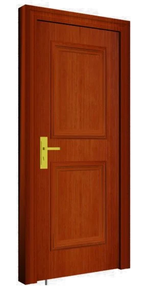
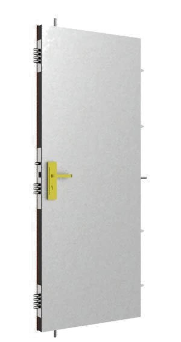
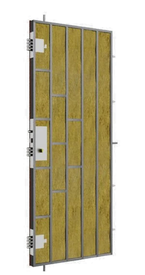
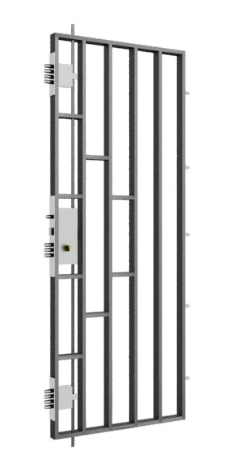
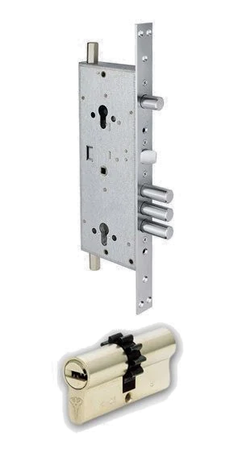
Lustrada a mano o pintada al tono. No se recubre con PVC ni con ningún material plástico.
Chapa de acero en el exterior y en el interior de la hoja, en calibre 16 o 14.
Rellena la hoja: protección acústica e ignífuga para que la puerta aísle además de cerrar.
Caños de acero estructural soldados con MIG para soportar golpes, y barras aceradas de 12 mm (hasta 8 horizontales) que forman un verdadero enrejado.
Cerradura con llaves computarizadas y protector de cilindro cementado y antitaladro. Va con 3 a 5 bisagras a rodamientos soldadas y visor óptico de 180°.
02 / Modelos
Fabricamos según lo que necesitás y preferís: elegís los componentes y los combinamos con nuevas tecnologías de seguridad. Tecnología nacional e israelí.
5 WAY · MODEL
Estructura SAE 1024, cerrojo multianclaje y hasta 8 barras aceradas horizontales.
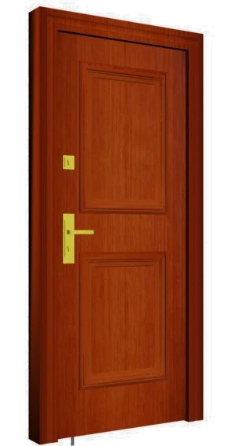
4 WAY · MODEL
De 3 a 5 bisagras a rodamientos, visor óptico de 180° y unos 90 kg en 90 × 200 cm.
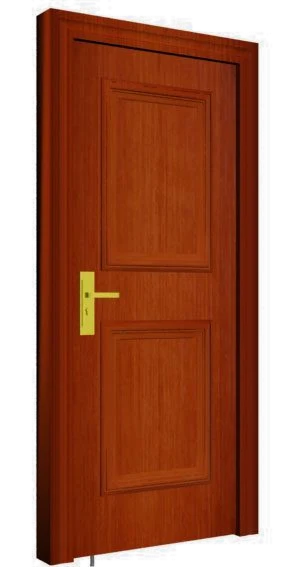
4 WAY · MODEL
Misma construcción en acero, chapa y lana mineral, con terminación lustrada a mano o al tono.
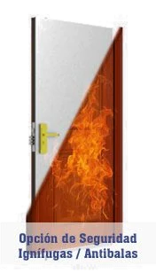
Salida de emergencia
Para salidas de escape y lugares donde hay que frenar el fuego: incombustible, aísla el calor y el ruido, con apertura JAQUE para que nunca se trabe. Doble chapa B.W.G. N°16 o N°14 y lana de roca volcánica de 140 kg de densidad.
Probada con calibres .22 a .45
Pruebas de balística según especificaciones del R.E.N.A.R. con calibres 22, 32, 38, 44 y 45: ningún proyectil atravesó las dos chapas B.W.G. N°14 y 16 que la recubren.
03 / Tu puerta, a medida
Contanos qué necesitás. La orden se llena sola mientras elegís y sale por WhatsApp completa, así no hay ida y vuelta.
04 / Fábrica
Más de 30 años haciendo puertas blindadas con tecnología, diseño y materiales de alta calidad. Estas son fotos de nuestro taller y de trabajos instalados.
1988arrancamos a fabricar
15anclajes, como máximo, en el cerrojo
5 añosde garantía
≈ 90 kgpesa una hoja de 90 × 200 cm
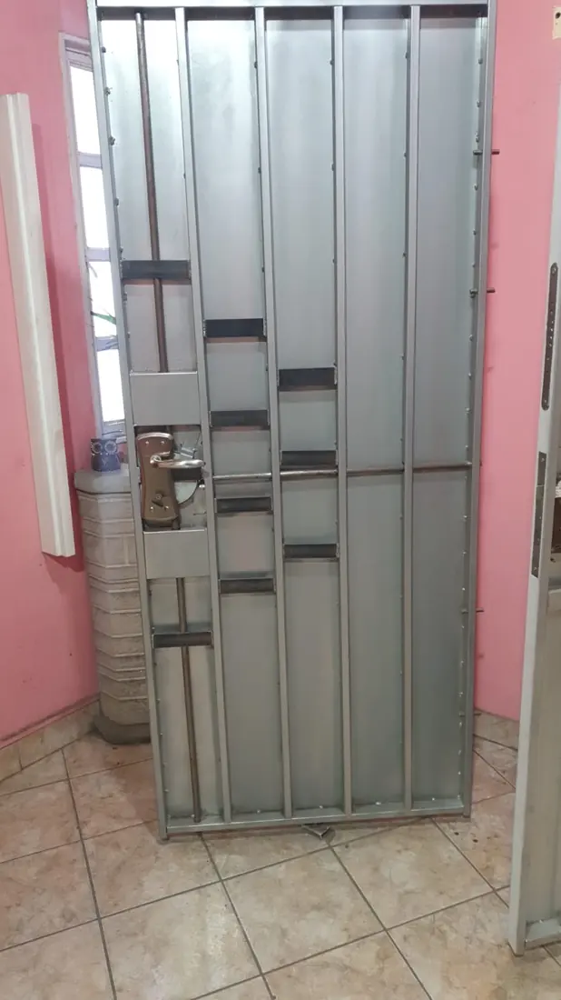
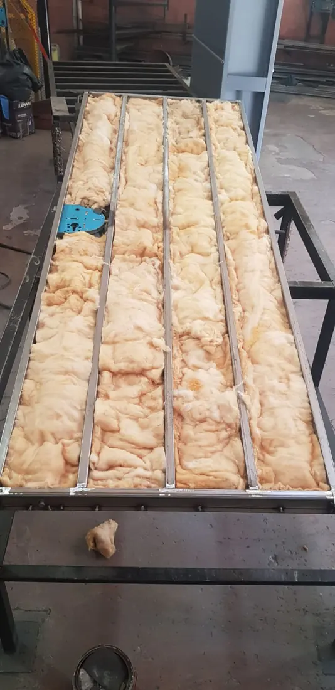
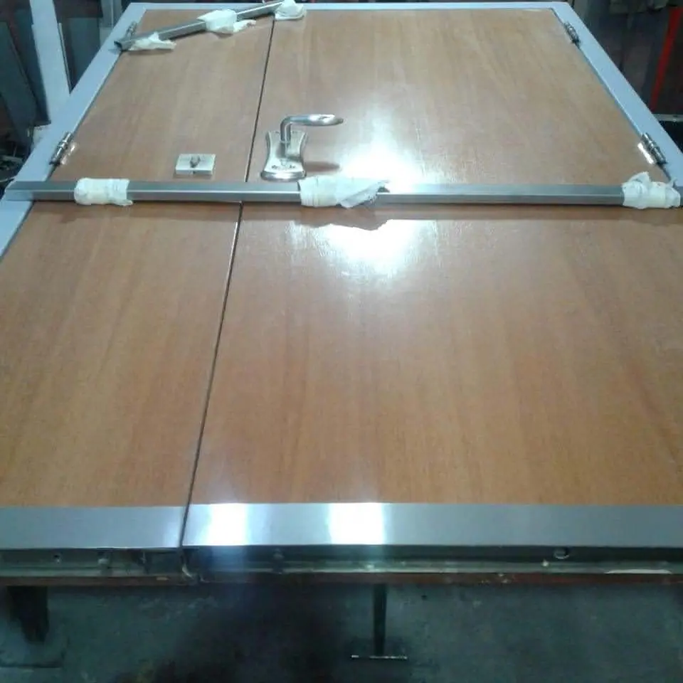
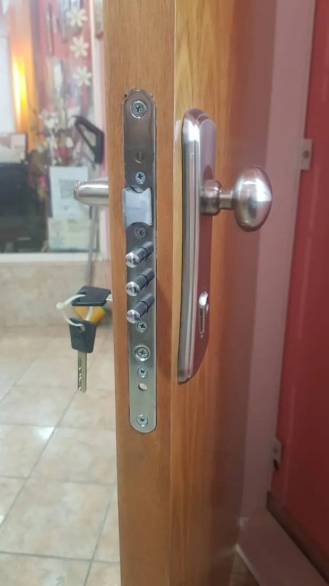
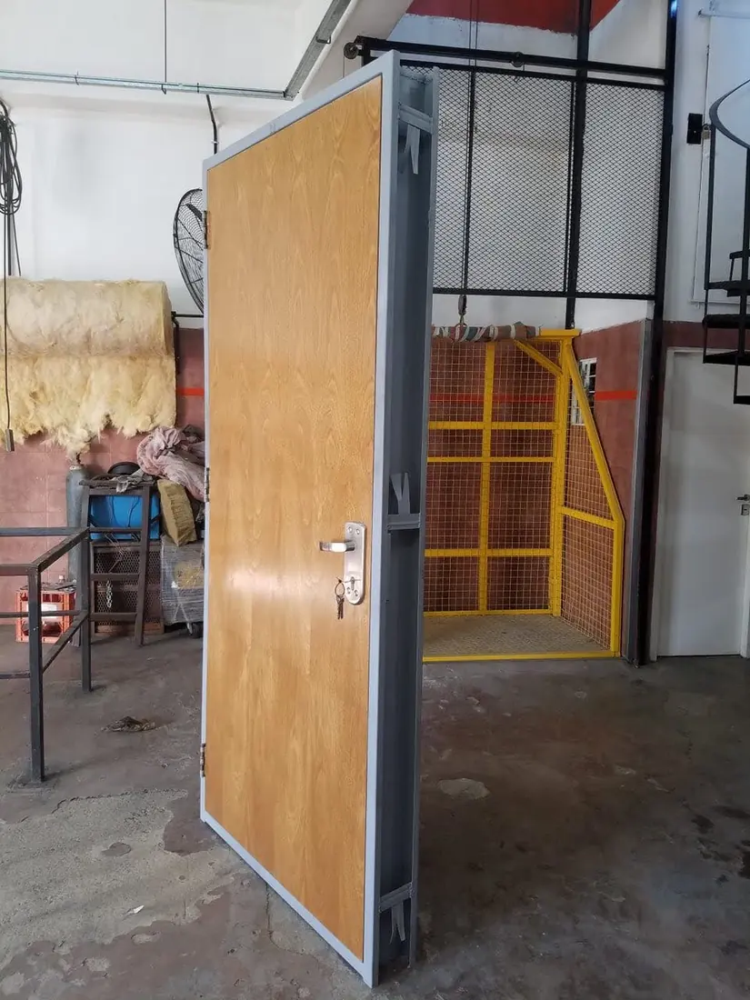
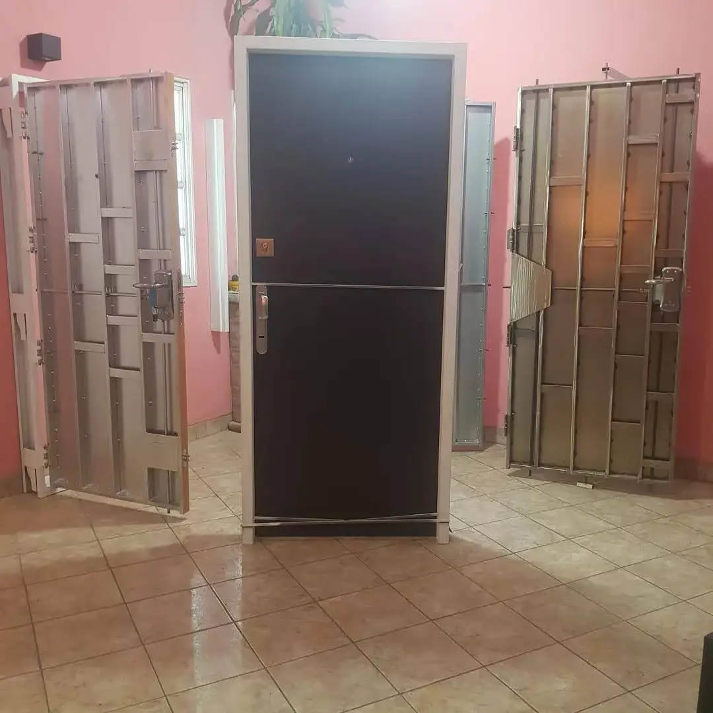
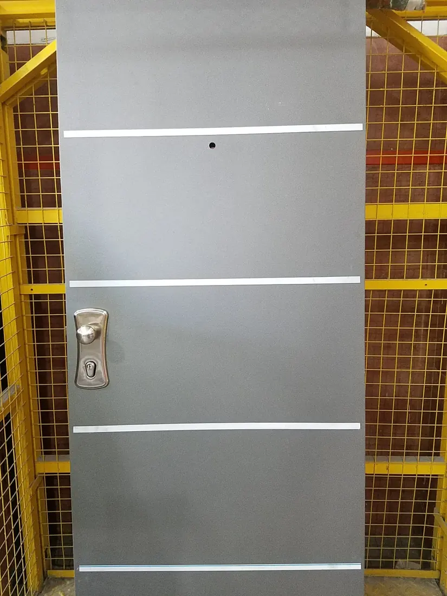

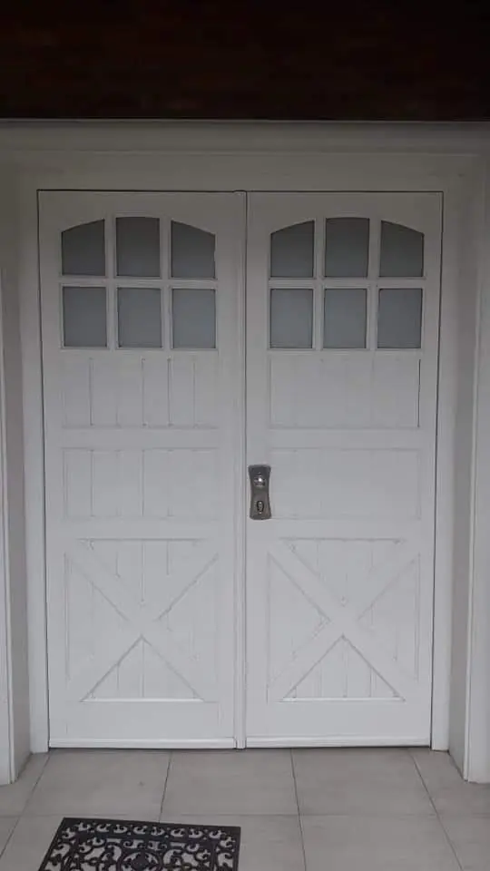
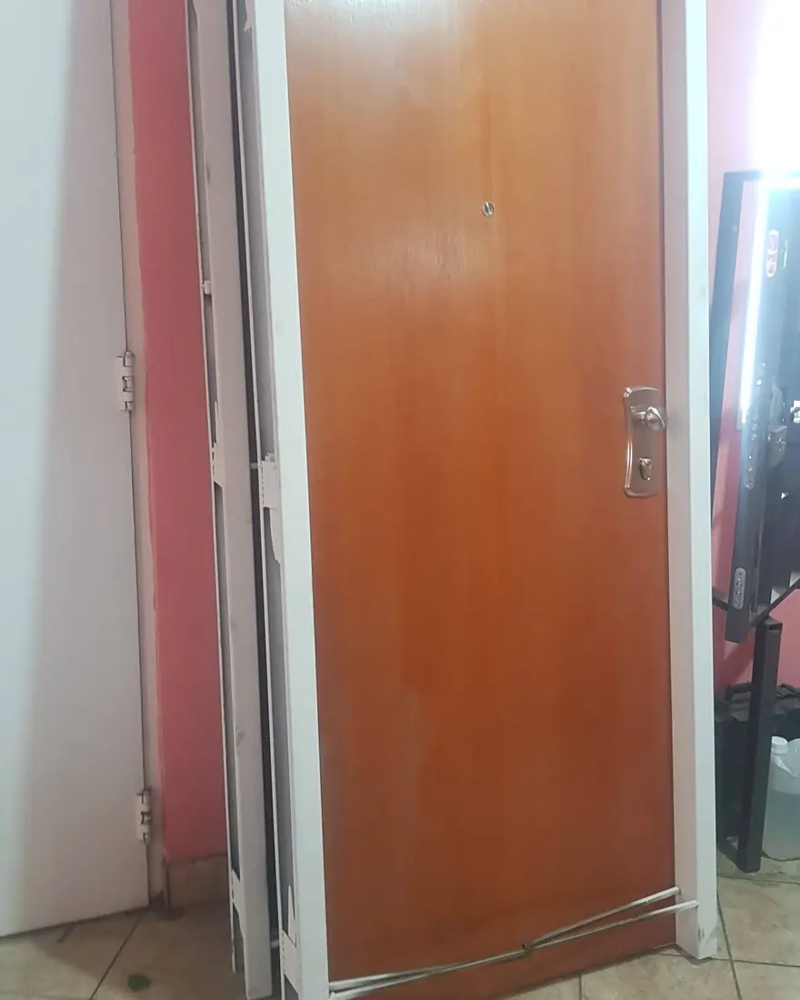
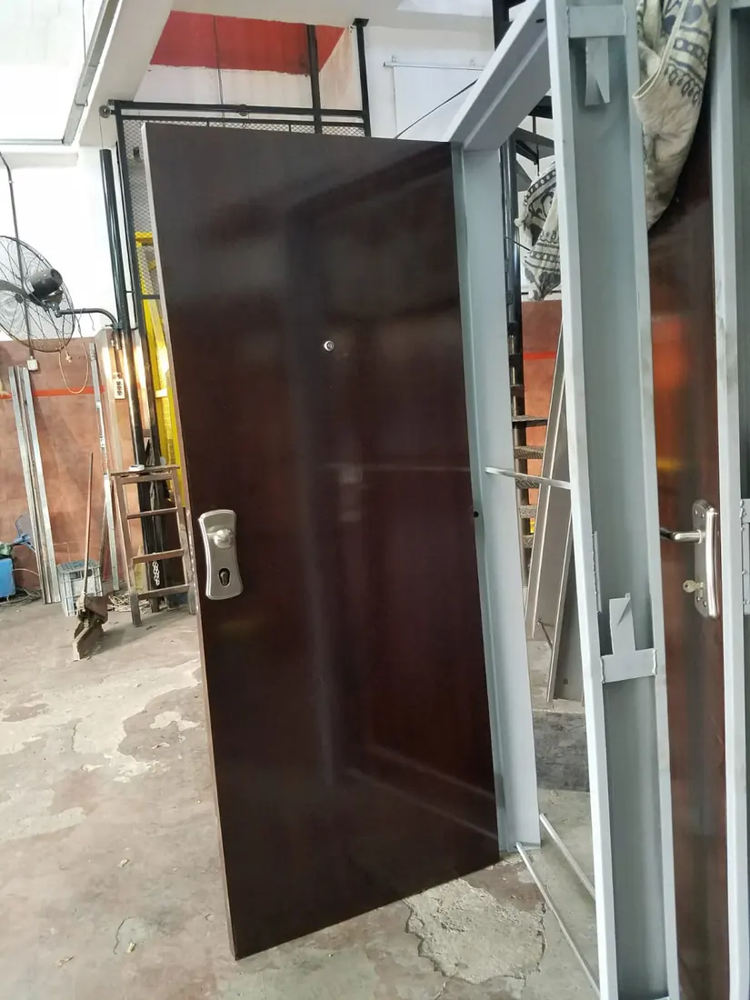
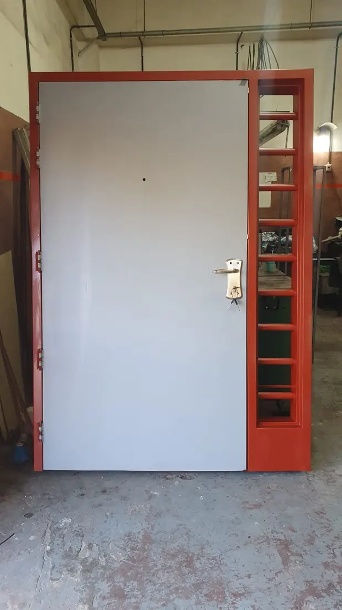
05 / Servicio técnico
Si ya tenés una puerta blindada, también te la cuidamos: todas las marcas, reparación de puertas y cambio de combinación en el acto.
06 / Contacto
Paso de Burgos 1046
Valentín Alsina, Lanús · Buenos Aires
CABAZona SurGran Buenos Aires
07 / Preguntas
Sí, en cualquier tipo de marco, siempre que sea de metal. Si no tenés, el técnico te asesora sobre la construcción, la provisión y los materiales del marco.
No. La visita a tu domicilio para ver el lugar es sin costo y la instalación de la puerta búnker es sin cargo.
5 años de garantía.
Una puerta blindada de 90 × 200 cm pesa aproximadamente 90 kg.
Sí. La terminación es en madera lustrada a mano, sin PVC ni ningún material plástico. Si preferís, la pintamos al tono.
Sí, con Visa, Mastercard y American Express.
Sí, trabajamos con todas las marcas: reparación de puertas y cambio de combinación en el acto. Para una urgencia, llamá las 24 hs al 4218-4680.